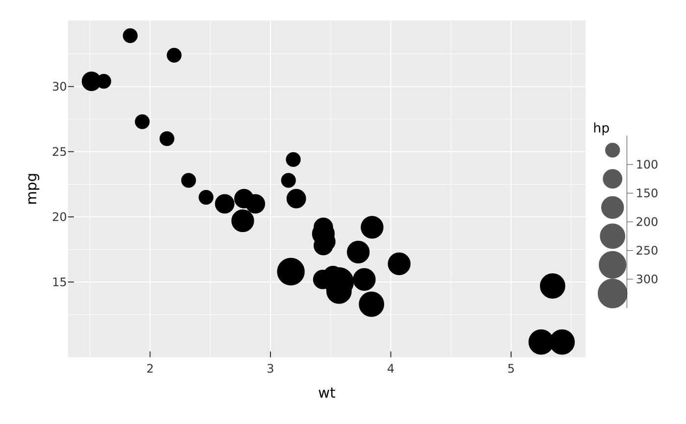
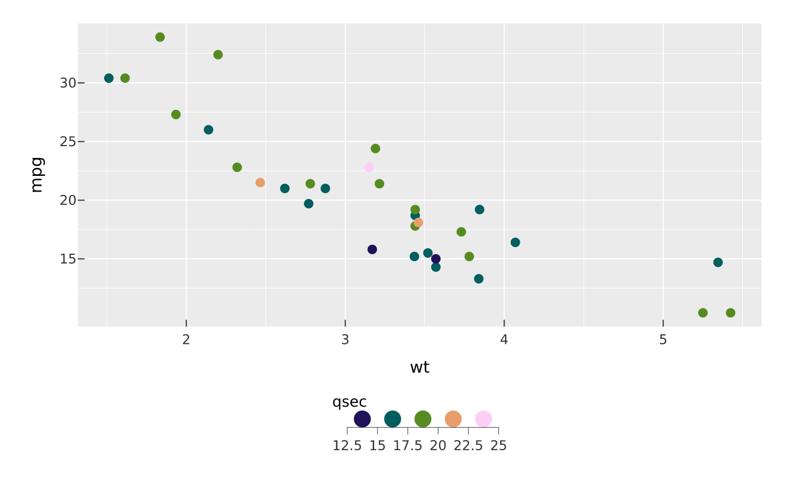

guide_bins() draws the legend of a binned scale the way ggplot2's
guide_bins() does: one key per bin, stacked edge to edge, with a small
axis beside them whose ticks and labels mark the bin boundaries rather
than naming each bin as an interval. Use it for scale_size_binned(),
scale_alpha_binned() and the binned colour scales (scale_color_binned(),
scale_*_steps(), scale_*_fermenter(), ...). It follows the legend's
direction: keys run top to bottom (smallest first) in a left / right legend
and left to right in a top / bottom one.
Usage
guide_bins(
title = NULL,
show.limits = FALSE,
reverse = FALSE,
axis = TRUE,
position = NULL
)Arguments
- title
The legend title, or
NULLto keep the scale's.- show.limits
Also label the outer limits of the first and last bins (default
FALSE: only the boundaries between bins are labelled).- reverse
Reverse the order of the keys.
- axis
Draw the axis line and ticks beside the keys (default
TRUE).- position
Where this legend goes:
"right","left","top","bottom"or"inside"(over the panels, attheme(legend.position.inside = )/legend.justification), or"panel": beside each facet panel, on the sidetheme(legend.position = )names (right by default; inside each panel when the theme puts legends inside) and justified along the panel edge bylegend.justification. A scale resolved"independent"across panels (resolve_scale()) draws each panel's legend there by default; a shared scale placed"panel"repeats its legend beside every panel.NULL(default) followstheme(legend.position = )(and"panel"for an independent scale). A guide's own position overrides the theme for that legend only, as in ggplot2 3.5, so legends can sit on different sides of one plot; legends at one position stack as usual. A legend at the top or bottom is laid out horizontally.theme(legend.position = "none")still hides every legend. Two legends that would merge (one variable, one title) only merge when they share a position.
Value
A guide specification for guides() or a scale's guide.
Details
A bins legend is drawn on its own: it does not merge with another legend of the same variable, and it shows no key for missing values. On a scale that is not binned it is ignored, with a warning, and the scale keeps its usual legend.
See also
guides(), guide_coloursteps() for a binned colour scale as a
segmented bar.
Examples
vplot(mtcars) |>
mark_point(x = wt, y = mpg, size = hp) |>
scale_size_binned() |>
guides(size = guide_bins())

vplot(mtcars) |>
mark_point(x = wt, y = mpg, color = qsec) |>
scale_color_binned(n = 4) |>
guides(color = guide_bins(show.limits = TRUE)) |>
theme(legend.position = "bottom")
